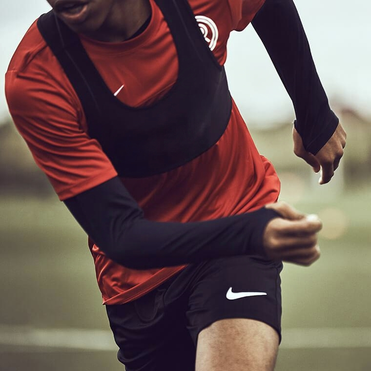

Chaleco inteligente con métricas biométricas en tiempo real para evitar lesiones por sobrecarga y optimizar el rendimiento de los deportistas.

Un proceso simple e intuitivo dividido en tres etapas para monitorear el rendimiento deportivo en tiempo real.